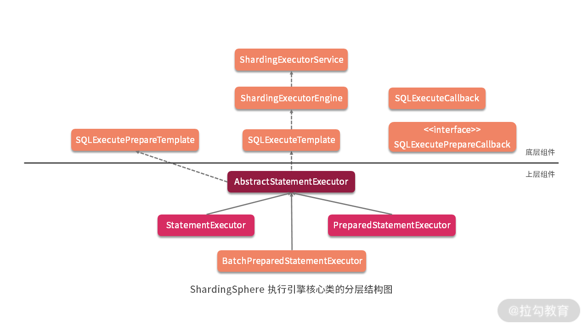
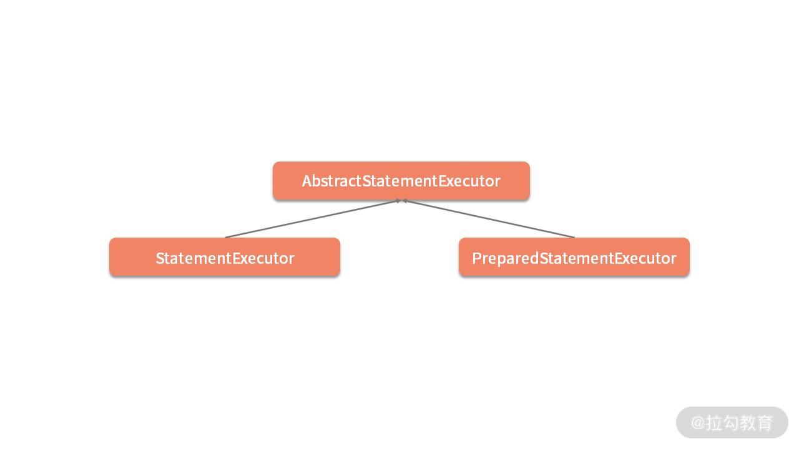
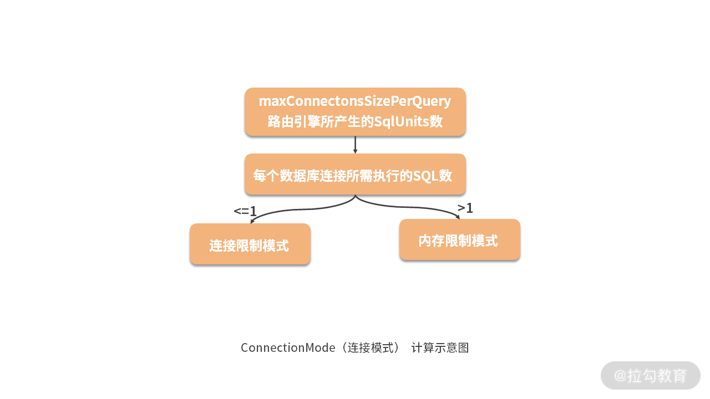

- 00 如何正确学习一款分库分表开源框架？.md.html
- 01 从理论到实践：如何让分库分表真正落地？.md.html
- 02 顶级项目：ShardingSphere 是一款什么样的 Apache 开源软件？.md.html
- 03 规范兼容：JDBC 规范与 ShardingSphere 是什么关系？.md.html
- 04 应用集成：在业务系统中使用 ShardingSphere 的方式有哪些？.md.html
- 05 配置驱动：ShardingSphere 中的配置体系是如何设计的？.md.html
- 06 数据分片：如何实现分库、分表、分库+分表以及强制路由？（上）.md.html
- 07 数据分片：如何实现分库、分表、分库+分表以及强制路由？（下）.md.html
- 08 读写分离：如何集成分库分表+数据库主从架构？.md.html
- 09 分布式事务：如何使用强一致性事务与柔性事务？.md.html
- 10 数据脱敏：如何确保敏感数据的安全访问？.md.html
- 11 编排治理：如何实现分布式环境下的动态配置管理？.md.html
- 12 从应用到原理：如何高效阅读 ShardingSphere 源码？.md.html
- 13 微内核架构：ShardingSphere 如何实现系统的扩展性？.md.html
- 14 分布式主键：ShardingSphere 中有哪些分布式主键实现方式？.md.html
- 15 解析引擎：SQL 解析流程应该包括哪些核心阶段？（上）.md.html
- 16 解析引擎：SQL 解析流程应该包括哪些核心阶段？（下）.md.html
- 17 路由引擎：如何理解分片路由核心类 ShardingRouter 的运作机制？.md.html
- 18 路由引擎：如何实现数据访问的分片路由和广播路由？.md.html
- 19 路由引擎：如何在路由过程中集成多种路由策略和路由算法？.md.html
- 20 改写引擎：如何理解装饰器模式下的 SQL 改写实现机制？.md.html
- 21 执行引擎：分片环境下 SQL 执行的整体流程应该如何进行抽象？.md.html
- 22 执行引擎：如何把握 ShardingSphere 中的 Executor 执行模型？（上）.md.html
- 23 执行引擎：如何把握 ShardingSphere 中的 Executor 执行模型？（下）.md.html
- 24 归并引擎：如何理解数据归并的类型以及简单归并策略的实现过程？.md.html
- 25 归并引擎：如何理解流式归并和内存归并在复杂归并场景下的应用方式？.md.html
- 26 读写分离：普通主从架构和分片主从架构分别是如何实现的？.md.html
- 27 分布式事务：如何理解 ShardingSphere 中对分布式事务的抽象过程？.md.html
- 28 分布式事务：ShardingSphere 中如何集成强一致性事务和柔性事务支持？（上）.md.html
- 29 分布式事务：ShardingSphere 中如何集成强一致性事务和柔性事务支持？（下）.md.html
- 30 数据脱敏：如何基于改写引擎实现低侵入性数据脱敏方案？.md.html
- 31 配置中心：如何基于配置中心实现配置信息的动态化管理？.md.html
- 32 注册中心：如何基于注册中心实现数据库访问熔断机制？.md.html
- 33 链路跟踪：如何基于 Hook 机制以及 OpenTracing 协议实现数据访问链路跟踪？.md.html
- 34 系统集成：如何完成 ShardingSphere 内核与 Spring+SpringBoot 的无缝整合？.md.html
- 35 结语：ShardingSphere 总结及展望.md.html
22 执行引擎：如何把握 ShardingSphere 中的 Executor 执行模型？（上）
在上一课时中，我们对 ShardingGroupExecuteCallback 和 SQLExecuteTemplate 做了介绍。从设计上讲，前者充当 ShardingExecuteEngine 的回调入口；而后者则是一个模板类，完成对 ShardingExecuteEngine 的封装并提供了对外的统一入口，这些类都位于底层的 sharding-core-execute 工程中。

从今天开始，我们将进入到 sharding-jdbc-core 工程，来看看 ShardingSphere 中执行引擎上层设计中的几个核心类。
AbstractStatementExecutor
如上图所示，根据上一课时中的执行引擎整体结构图，可以看到SQLExecuteTemplate的直接使用者是AbstractStatementExecutor 类，今天我们就从这个类开始展开讨论，该类的变量比较多，我们先来看一下：
//数据库类型
private final DatabaseType databaseType;
//JDBC中用于指定结果处理方式的 resultSetType
private final int resultSetType;
//JDBC中用于指定是否可对结果集进行修改的 resultSetConcurrency
private final int resultSetConcurrency;
//JDBC中用于指定事务提交或回滚后结果集是否仍然可用的 resultSetConcurrency
private final int resultSetHoldability;
//分片 Connection
private final ShardingConnection connection;
//用于数据准备的模板类
private final SQLExecutePrepareTemplate sqlExecutePrepareTemplate;
//SQL 执行模板类
private final SQLExecuteTemplate sqlExecuteTemplate;
//JDBC的Connection列表
private final Collection<Connection> connections = new LinkedList<>();
//SQLStatement 上下文
private SQLStatementContext sqlStatementContext;
//参数集
private final List<List<Object>> parameterSets = new LinkedList<>();
//JDBC的Statement 列表
private final List<Statement> statements = new LinkedList<>();
//JDBC的ResultSet 列表
private final List<ResultSet> resultSets = new CopyOnWriteArrayList<>();
//ShardingExecuteGroup 列表
private final Collection<ShardingExecuteGroup<StatementExecuteUnit>> executeGroups = new LinkedList<>();
从这个类开始，我们会慢慢接触 JDBC 规范相关的对象，因为 ShardingSphere 的设计目标是，重写一套与目前的 JDBC 规范完全兼容的体系。这里，我们看到的 Connection、Statement 和 ResultSet 等对象，以及 resultSetType、resultSetConcurrency、resultSetHoldability 等参数，都是属于 JDBC 规范中的内容，我们在注释上做了特别的说明，你对此也都比较熟悉。
而像 ShardingSphere 自己封装的 ShardingConnection 对象也很重要，我们已经在《03 | 规范兼容：JDBC 规范与 ShardingSphere 是什么关系？》中对这个类的实现方式，以及如何兼容 JDBC 规范的详细过程做了介绍。
在 AbstractStatementExecutor 中，这些变量的展开，会涉及很多 sharding-jdbc-core 代码工程，关于数据库访问相关的类的介绍，包括我们以前已经接触过的 ShardingStatement 和 ShardingPreparedStatement 等类，所以我们在展开 AbstractStatementExecutor 类的具体实现方法之前，需要对这些类有一定的了解。
在 AbstractStatementExecutor 构造函数中，我们发现了上一课时中介绍的执行引擎 ShardingExecuteEngine 的创建过程，并通过它创建了 SQLExecuteTemplate 模板类，相关代码如下所示：
public AbstractStatementExecutor(final int resultSetType, final int resultSetConcurrency, final int resultSetHoldability, final ShardingConnection shardingConnection) {
…
ShardingExecuteEngine executeEngine = connection.getRuntimeContext().getExecuteEngine();
sqlExecuteTemplate = new SQLExecuteTemplate(executeEngine, connection.isHoldTransaction());
}
同时，AbstractStatementExecutor 中如下所示的 cacheStatements 方法也很有特色，该方法会根据持有的 ShardingExecuteGroup 类分别填充 statements 和 parameterSets 这两个对象，以供 AbstractStatementExecutor 的子类进行使用：
protected final void cacheStatements() {
for (ShardingExecuteGroup<StatementExecuteUnit> each : executeGroups) {
statements.addAll(Lists.transform(each.getInputs(), new Function<StatementExecuteUnit, Statement>() {
@Override
public Statement apply(final StatementExecuteUnit input) {
return input.getStatement();
}
}));
parameterSets.addAll(Lists.transform(each.getInputs(), new Function<StatementExecuteUnit, List<Object>>() {
@Override
public List<Object> apply(final StatementExecuteUnit input) {
return input.getRouteUnit().getSqlUnit().getParameters();
}
}));
}
}
注意：这里在实现方式上使用了 Google 提供的 Guava 框架中的 Lists.transform 方法，从而完成了不同对象之间的转换过程，这种实现方式在 ShardingSphere 中应用广泛，非常值得你学习。
然后我们来看 AbstractStatementExecutor 中最核心的方法，即执行回调的 executeCallback 方法：
protected final <T> List<T> executeCallback(final SQLExecuteCallback<T> executeCallback) throws SQLException {
List<T> result = sqlExecuteTemplate.executeGroup((Collection) executeGroups, executeCallback);
refreshMetaDataIfNeeded(connection.getRuntimeContext(), sqlStatementContext);
return result;
}
显然，在这里应该使用 SQLExecuteTemplate 模板类来完成具体回调的执行过程。同时，我可以看到这里还有一个 refreshMetaDataIfNeeded 辅助方法用来刷选元数据。
AbstractStatementExecutor 有两个实现类：一个是普通的 StatementExecutor，一个是 PreparedStatementExecutor，接下来我将分别进行讲解。

StatementExecutor
我们来到 StatementExecutor，先看它的用于执行初始化操作的 init 方法：
public void init(final SQLRouteResult routeResult) throws SQLException {
setSqlStatementContext(routeResult.getSqlStatementContext());
getExecuteGroups().addAll(obtainExecuteGroups(routeResult.getRouteUnits()));
cacheStatements();
}
这里的 cacheStatements 方法前面已经介绍过，而 obtainExecuteGroups 方法用于获取所需的 ShardingExecuteGroup 集合。要实现这个方法，就需要引入 SQLExecutePrepareTemplate 和对应的回调 SQLExecutePrepareCallback。
1.SQLExecutePrepareCallback
从命名上看，让人感觉 SQLExecutePrepareTemplate 和 SQLExecuteTemplate 应该是一对，尤其是名称中有一个“Prepare”，让人联想到 PreparedStatement。
但事实上，SQLExecutePrepareTemplate 与 SQLExecuteTemplate 没有什么关联，它也不是像 SQLExecuteTemplate 一样提供了 ShardingExecuteEngine 的封装，而是主要关注于 ShardingExecuteGroup 数据的收集和拼装，换句话说是为了准备（Prepare）数据。
在 SQLExecutePrepareTemplate 中，核心的功能就是下面这个方法，该方法传入了一个 SQLExecutePrepareCallback 对象，并返回 ShardingExecuteGroup 的一个集合：
public Collection<ShardingExecuteGroup<StatementExecuteUnit>> getExecuteUnitGroups(final Collection<RouteUnit> routeUnits, final SQLExecutePrepareCallback callback) throws SQLException {
return getSynchronizedExecuteUnitGroups(routeUnits, callback);
}
为了构建这个集合，SQLExecutePrepareTemplate 实现了很多辅助方法，同时它还引入了一个 SQLExecutePrepareCallback 回调，来完成 ShardingExecuteGroup 数据结构中部分数据的填充。SQLExecutePrepareCallback 接口定义如下，可以看到 Connection 和 StatementExecuteUnit 这两个对象是通过回调来创建的：
public interface SQLExecutePrepareCallback {
//获取 Connection 列表
List<Connection> getConnections(ConnectionMode connectionMode, String dataSourceName, int connectionSize) throws SQLException;
//获取 Statement 执行单元
StatementExecuteUnit createStatementExecuteUnit(Connection connection, RouteUnit routeUnit, ConnectionMode connectionMode) throws SQLException;
}
当我们获取了想要的 ShardingExecuteGroup 之后，相当于完成了 StatementExecutor 的初始化工作。该类中剩下的就是一系列以“execute”开头的 SQL 执行方法，包括 executeQuery、executeUpdate，以及它们的各种重载方法。我们先来看用于查询的 executeQuery 方法：
public List<QueryResult> executeQuery() throws SQLException {
final boolean isExceptionThrown = ExecutorExceptionHandler.isExceptionThrown();
//创建 SQLExecuteCallback 并执行查询
SQLExecuteCallback<QueryResult> executeCallback = new SQLExecuteCallback<QueryResult>(getDatabaseType(), isExceptionThrown) {
@Override
protected QueryResult executeSQL(final String sql, final Statement statement, final ConnectionMode connectionMode) throws SQLException {
return getQueryResult(sql, statement, connectionMode);
}
};
//执行 SQLExecuteCallback 并返回结果
return executeCallback(executeCallback);
}
我们已经在上一课时中介绍过这个方法，我们知道 SQLExecuteCallback 实现了 ShardingGroupExecuteCallback 接口并提供了 executeSQL 模板方法。而在上述 executeQuery 方法中，executeSQL 模板方法的实现过程，就是调用如下所示的 getQueryResult 方法：
private QueryResult getQueryResult(final String sql, final Statement statement, final ConnectionMode connectionMode) throws SQLException {
//通过 Statement 执行 SQL 并获取结果
ResultSet resultSet = statement.executeQuery(sql);
getResultSets().add(resultSet);
//根据连接模式来确认构建结果
return ConnectionMode.MEMORY_STRICTLY == connectionMode ? new StreamQueryResult(resultSet) : new MemoryQueryResult(resultSet);
}
2.ConnectionMode
getQueryResult 方法中完全基于 JDBC 中的 Statement 和 ResultSet 对象来执行查询并返回结果。
但是，这里也引入了 ShardingSphere 执行引擎中非常重要的一个概念，即ConnectionMode（连接模式），它是一个枚举：
public enum ConnectionMode {
MEMORY_STRICTLY, CONNECTION_STRICTLY
}
可以看到有两种具体的连接模式：MEMORY_STRICTLY 和 CONNECTION_STRICTLY。
- MEMORY_STRICTLY 代表内存限制模式，
- CONNECTION_STRICTLY 代表连接限制模式。
ConnectionMode（连接模式） 是 ShardingSphere 所提出的一个特有概念，背后体现的是一种设计上的平衡思想。从数据库访问资源的角度来看，一方面是对数据库连接资源的控制保护，另一方面是采用更优的归并模式达到对中间件内存资源的节省，如何处理好两者之间的关系，是 ShardingSphere 执行引擎需求解决的问题。
为此，ShardingSphere 提出了连接模式的概念，简单举例说明：
- 当采用内存限制模式时，对于同一数据源，如果有 10 张分表，那么执行时会获取 10 个连接并进行并行执行；
- 而当采用连接限制模式时，执行过程中只会获取 1 个连接而进行串行执行。
那么这个 ConnectionMode 是怎么得出来的呢？
实际上这部分代码位于 SQLExecutePrepareTemplate 中，我们根据 maxConnectionsSizePerQuery 这个配置项，以及与每个数据库所需要执行的 SQL 数量进行比较，然后得出具体的 ConnectionMode：
ConnectionMode connectionMode = maxConnectionsSizePerQuery < sqlUnits.size() ? ConnectionMode.CONNECTION_STRICTLY : ConnectionMode.MEMORY_STRICTLY;
关于这个判断条件，我们可以使用一张简单的示意图来进行说明，如下所示：

如上图所示，我们可以看到如果每个数据库连接所指向的 SQL 数多于一条时，走的是内存限制模式，反之走的是连接限制模式。
3.StreamQueryResult VS MemoryQueryResult
在了解了 ConnectionMode（连接模式） 的设计理念后，我们再来看 StatementExecutor 的 executeQuery 方法返回的是一个 QueryResult。
在 ShardingSphere 中，QueryResult 是一个代表查询结果的接口，可以看到该接口封装了很多面向底层数据获取的方法：
public interface QueryResult {
boolean next() throws SQLException;
Object getValue(int columnIndex, Class<?> type) throws SQLException;
Object getCalendarValue(int columnIndex, Class<?> type, Calendar calendar) throws SQLException;
InputStream getInputStream(int columnIndex, String type) throws SQLException;
boolean wasNull() throws SQLException;
int getColumnCount() throws SQLException;
String getColumnLabel(int columnIndex) throws SQLException;
boolean isCaseSensitive(int columnIndex) throws SQLException;
}
在 ShardingSphere中，QueryResult 接口存在于 StreamQueryResult（代表流式归并结果）和 MemoryQueryResult （代表内存归并结果）这两个实现类。
ShardingSphere 采用这样的设计实际上跟前面介绍的 ConnectionMode 有直接关系。
- 我们知道，在内存限制模式中，ShardingSphere 对一次操作所耗费的数据库连接数量不做限制；
- 而当采用连接限制模式时，ShardingSphere严格控制对一次操作所耗费的数据库连接数量。
基于这样的设计原理，如上面的 ConnectionMode 的计算示意图所示：在 maxConnectionSizePerQuery 允许的范围内，当一个连接需要执行的请求数量大于 1 时，意味着当前的数据库连接无法持有相应的数据结果集，则必须采用内存归并；反之，则可以采用流式归并。
- StreamQueryResult
我们通过对比 StreamQueryResult 和 MemoryQueryResult 的实现过程，对上述原理做进一步分析，在 StreamQueryResult 中，它的 next 方法非常简单：
@Override
public boolean next() throws SQLException {
return resultSet.next();
}
显然这是一种流式处理的方式，从 ResultSet 中获取下一个数据行。
- MemoryQueryResult
我们再来看 MemoryQueryResult，在它的构造函数中，通过 getRows 方法把 ResultSet 中的全部数据行，先进行获取并存储在内存变量 rows 中：
private Iterator<List<Object>> getRows(final ResultSet resultSet) throws SQLException {
Collection<List<Object>> result = new LinkedList<>();
while (resultSet.next()) {
List<Object> rowData = new ArrayList<>(resultSet.getMetaData().getColumnCount());
for (int columnIndex = 1; columnIndex <= resultSet.getMetaData().getColumnCount(); columnIndex++) {
//获取每一个 Row 的数据
Object rowValue = getRowValue(resultSet, columnIndex);
//存放在内存中
rowData.add(resultSet.wasNull() ? null : rowValue);
}
result.add(rowData);
}
return result.iterator();
}
基于以上方法，MemoryQueryResult 的 next 方法应该是，从这个 rows 变量中获取下一个数据行，如下所示：
public boolean next() {
if (rows.hasNext()) {
currentRow = rows.next();
return true;
}
currentRow = null;
return false;
}
通过这种方式，我们就将传统的流式处理方式转变成了内存处理方式。
关于 ConnectionMode 和两种 QueryResult 的讨论就到这里，让我们回到 StatementExecutor。理解了 StatementExecutor 的 executeQuery 方法之后，我们再来看它更为通用的 execute 方法，如下所示：
public boolean execute() throws SQLException {
return execute(new Executor() {
@Override
public boolean execute(final Statement statement, final String sql) throws SQLException {
return statement.execute(sql);
}
});
}
注意到上述 execute 方法并没有使用 SQLExecuteCallback 回调，而是使用了一个 Executor 接口，该接口定义如下：
private interface Executor {
//执行 SQL
boolean execute(Statement statement, String sql) throws SQLException;
}
然后我们再继续往下看，发现在改方法实际的执行过程中，还是用到了 SQLExecuteCallback 回调：
private boolean execute(final Executor executor) throws SQLException {
final boolean isExceptionThrown = ExecutorExceptionHandler.isExceptionThrown();
//创建 SQLExecuteCallback 并执行
SQLExecuteCallback<Boolean> executeCallback = new SQLExecuteCallback<Boolean>(getDatabaseType(), isExceptionThrown) {
@Override
protected Boolean executeSQL(final String sql, final Statement statement, final ConnectionMode connectionMode) throws SQLException {
//使用 Executor 进行执行
return executor.execute(statement, sql);
}
};
List<Boolean> result = executeCallback(executeCallback);
if (null == result || result.isEmpty() || null == result.get(0)) {
return false;
}
return result.get(0);
}
这里多嵌套一层的目的是，更好地分离代码的职责，并对执行结果进行处理，同样的处理技巧在 StatementExecutor 的 executeUpdate 方法中也有体现。
PreparedStatementExecutor
讲完 StatementExecutor 之后，我们来看 PreparedStatementExecutor。PreparedStatementExecutor 包含了与 StatementExecutor 一样的用于初始化的 init 方法。然后，我们同样来看它如下所示的 executeQuery 方法，可以看到这里的处理方式与在 StatementExecutor 的一致：
public List<QueryResult> executeQuery() throws SQLException {
final boolean isExceptionThrown = ExecutorExceptionHandler.isExceptionThrown();
//创建 SQLExecuteCallback 并执行
SQLExecuteCallback<QueryResult> executeCallback = new SQLExecuteCallback<QueryResult>(getDatabaseType(), isExceptionThrown) {
@Override
protected QueryResult executeSQL(final String sql, final Statement statement, final ConnectionMode connectionMode) throws SQLException {
return getQueryResult(statement, connectionMode);
}
};
return executeCallback(executeCallback);
}
然后，我们再来看它的 execute 方法，就会发现有不同点：
public boolean execute() throws SQLException {
boolean isExceptionThrown = ExecutorExceptionHandler.isExceptionThrown();
SQLExecuteCallback<Boolean> executeCallback = SQLExecuteCallbackFactory.getPreparedSQLExecuteCallback(getDatabaseType(), isExceptionThrown);
List<Boolean> result = executeCallback(executeCallback);
if (null == result || result.isEmpty() || null == result.get(0)) {
return false;
}
return result.get(0);
}
与 StatementExecutor 不同，PreparedStatementExecutor 在实现 execute 方法时没有设计类似 Executor 这样的接口，而是直接提供了一个工厂类 SQLExecuteCallbackFactory：
public final class SQLExecuteCallbackFactory {
…
public static SQLExecuteCallback<Boolean> getPreparedSQLExecuteCallback(final DatabaseType databaseType, final boolean isExceptionThrown) {
return new SQLExecuteCallback<Boolean>(databaseType, isExceptionThrown) {
@Override
protected Boolean executeSQL(final String sql, final Statement statement, final ConnectionMode connectionMode) throws SQLException {
return ((PreparedStatement) statement).execute();
}
};
}
}
注意到这里的静态方法 getPreparedSQLExecuteCallback 也就是返回了一个 SQLExecuteCallback 回调的实现，而在这个实现中使用了 JDBC 底层的 PreparedStatement 完成具体 SQL 的执行过程。
至此，我们对 ShardingSphere 中两个主要执行器 StatementExecutor 和 PreparedStatementExecutor 都进行了详细介绍。
从源码解析到日常开发
本课时关于两种 QueryResult 的设计思想，同样可以应用到日常开发中。当我们面对如何处理来自数据库或外部数据源的数据时，可以根据需要设计流式访问方式和内存访问方式，这两种访问方式在数据访问过程中都具有一定的代表性。
通常，我们会首先想到将所有访问到的数据存放在内存中，再进行二次处理，但这种处理方式会面临性能问题，流式访问方式性能更高，但需要我们挖掘适合的应用场景。
小结与预告
今天介绍了 ShardingSphere 执行引擎主题的第二个课时，我们重点围绕执行引擎中的执行器展开讨论，给出了 StatementExecutor 和 PreparedStatementExecutor 这两种执行器的实现方式，也给出了 ShardingSphere 中关于连接模式的详细讨论。
这里给大家留一道思考题：ShardingSphere 中连接模式的概念和作用是什么？欢迎你在留言区与大家讨论，我将逐一点评解答。
从类层结构而言，StatementExecutor 和 PreparedStatementExecutor 都属于底层组件，在下一课时，我们会介绍包括 ShardingStatement 和 PreparedShardingStatement 在内的位于更加上层的执行引擎组件。